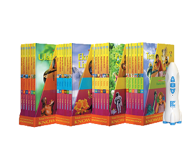
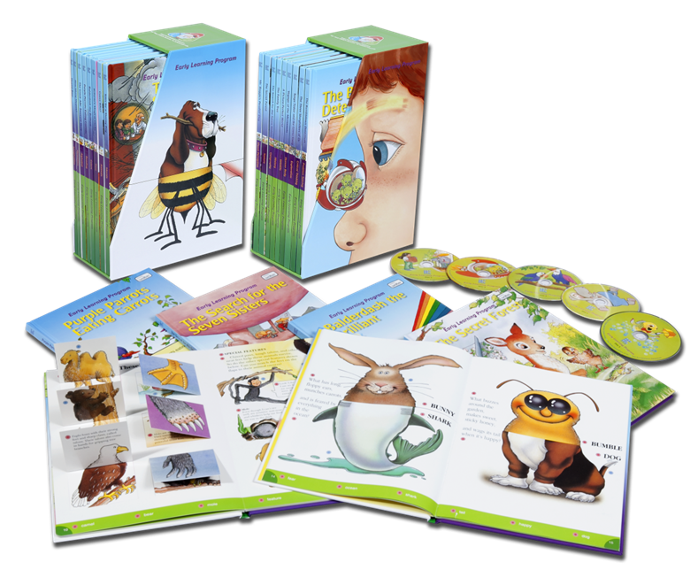

Rubaca Ibrahim


SMART HAFIZ
Smart Hafiz merupakan Inovasi terbaru dari Al Qolam, produk edukasi anak-anak Islami yang memiliki banyak sekali konten edukasi dan juga Fun. Dengan kualitas suara yang sangat baik, smart hafiz ini memiliki fitur karaoke untuk media anak mengaji dan bernyayi.
Spesifikasi selengkapnya >>>>>
LITTLE ABID
Produk baru dari penerbit Cordoba kids yaitu buku LITTLE ABID – Balita Cerdas & Soleh, buku yang mengusung konsep positive parenting , more power full parenting with heart ini membantu ayah bunda menyiapkan pola pengasuhan.
Spesifikasi selengkapnya >>>>>

WIDYA WIYATA PERTAMA
Widya Wiyata Pertama (WWP) adalah buku yang menyajikan pengetahuan yang bernilai pada anak pada tingkat pemahaman secara jelas dan tepat, disertai dengan humor dan imajinasi. Atau bisa dikatakan Widya Wiyata Pertama (WWP) adalah ensiklopedi yang menggunakan bahasa anak-anak, bukan bahasa data (yang biasanya lebih merepotkan orangtua untuk menterjemahkan dalam bahasa anak-anak lagi)
Spesifikasi selengkapnya >>>>>

CAKRAWALA PENGETAHUAN DASAR
Cakrawala Pengetahuan Dasar (CPD) mengembangkan 49 keterampilan melalui cerita yang interaktif! Buku 3-D Cakrawala Pengetahuan Dasar (CPD) yang membuat kegiatan belajar & membaca menjadi menyenangkan.
Spesifikasi selengkapnya >>>>>
NEW HAFIZ HAFIZAH TALKING DOLL
New Hafiz dan hafizah talking doll Bilingual memberikan berbagai fitur dan konten tambahan sebagai media edukasi dan bermain anak-anak. dengan adanya fitur bilingual ini menjadikan Hafoz Hafizah Talking Doll ini bisa digunakan oleh siapapun dari negara manapun.
Spesifikasi selengkapnya >>>>>